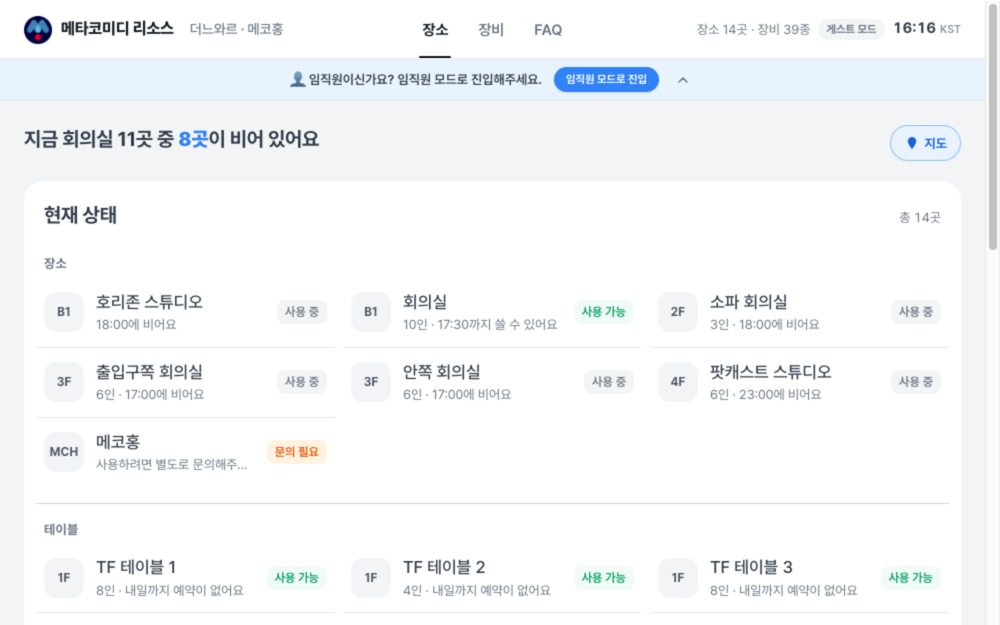
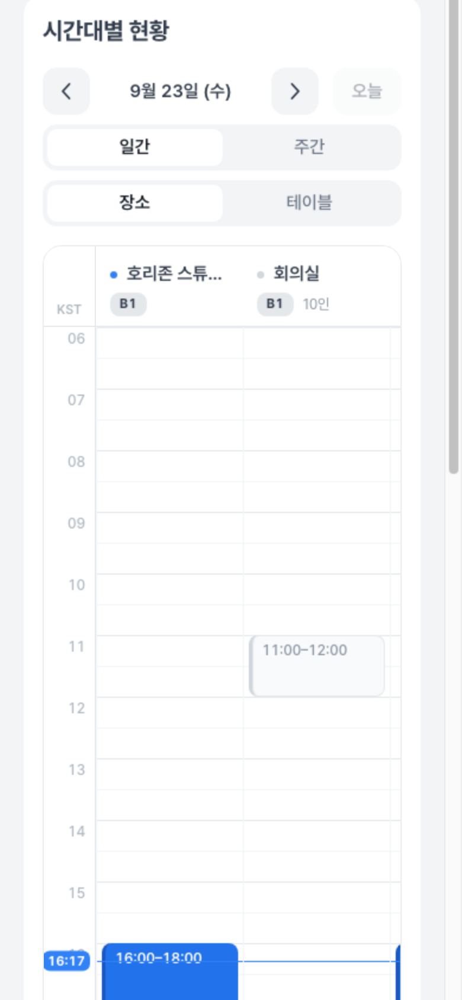
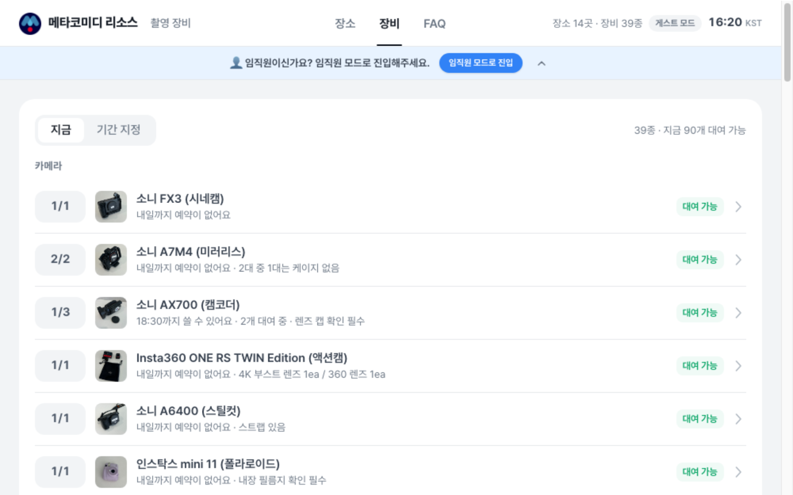

몇 시까지 쓸 수 있는지
하루를 06시부터 22시까지 시간표로 펼쳐요.
파란 막대가 예약된 시간, 파란 선이 지금이에요. 주간 보기로 한 방의 일주일도 봐요.

촬영 장비는
남은 수량까지
카메라·렌즈·마이크·조명 등 39종의 보유 수량과 지금 남은 수량을 봐요.
임직원은 사내 주소에서 바로 대여를 신청하고, 남아 있으면 즉시 확정돼요.

메타코미디 임직원
사내 주소에서
장비 대여 신청
회사 계정으로 열면 대여 신청·내역·취소가 열려요. 사용 목적과 대여·반납 일시를 적으면 남은 수량 안에서 즉시 확정되고, 반납 인증샷도 남겨요.
장소 예약
예약은 사내
구글 캘린더에서
이 페이지는 현황을 보는 곳이에요. 장소 예약은 지금처럼 임직원이 사내 구글 캘린더에서 하고, 바뀐 내용은 1분 안에 보드에 반영돼요.
함께 쓰는 서비스
크리에이터 일정은
캘린더에서
촬영·출연·행사 일정과 업로드 예정은 메타코미디 캘린더가 맡아요. 둘 다 회사 계정이면 바로 열려요.